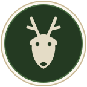

Wild Life ObservationPflege hier den Schutzstatus und den Jagdzeitraum bzw. die Schutzbestimmung jeder Gattung. Die Angaben erscheinen automatisch überall, wo die Gattung verwendet wird (Tier-Dialog und Suche).
| Gattung | Status | Geschützt? | Jagdzeitraum / Schutzbestimmung | Aktion |
|---|